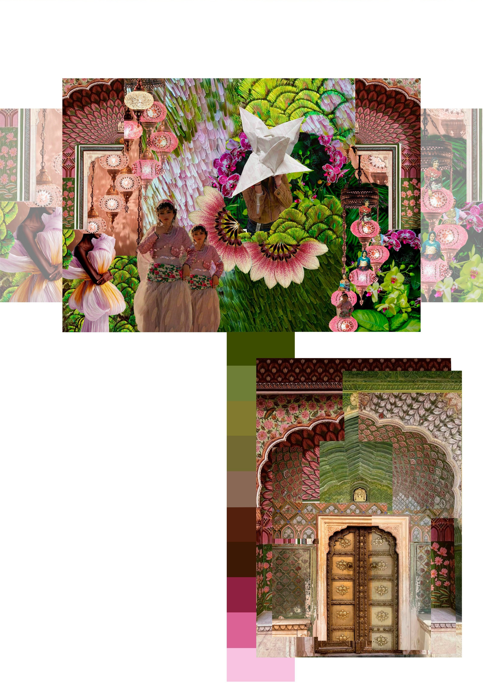
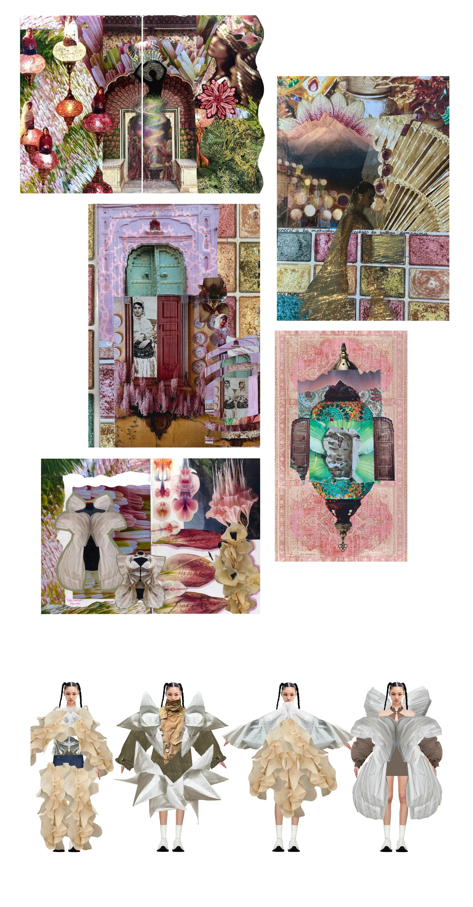

Proyecto 02 — Volúmenes Mujer
A través del mosaico.
moodboard + color palette.
A través del mosaico
A través de mis ojos,
A las mujeres kurdas como inspiración escojo.
Su veneración a la naturaleza
Su vestimenta colorida y fluida
Es un punto de partida, de inspiración en vida.
Realzar la belleza femenina como condición
Tal como un mosaico,
Requiere destrucción para su reconstrucción.
Tal como esta colección,
Que uniendo papeles logro su creación
Surgiendo del moulage
Mi mundo creativo tomó vida en un collage
A través de mis ojos,
A las mujeres kurdas como inspiración escojo.
Su veneración a la naturaleza
Su vestimenta colorida y fluida
Es un punto de partida, de inspiración en vida.
Realzar la belleza femenina como condición
Tal como un mosaico,
Requiere destrucción para su reconstrucción.
Tal como esta colección,
Que uniendo papeles logro su creación
Surgiendo del moulage
Mi mundo creativo tomó vida en un collage

Sketchbook
moulage
Line up
El objetivo de esta colección es el trabajo de volúmenes
excesivamente grandes en prendas exteriores a partir de
moulage utilizando papel y glasilla.
excesivamente grandes en prendas exteriores a partir de
moulage utilizando papel y glasilla.

Proceso
Sesión de fotos